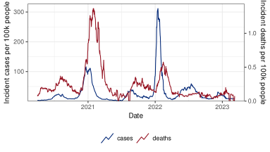
Quick Tour of Time Series Forecasting
MICOM Tooling Workshop 2025
David Weber, Nat DeFries
Adapted from slides by Alice Cima, Rachel Lobay, Daniel McDonald, Ryan Tibshirani, with huge thanks to Logan Brooks, Xueda Shen, and Dmitry Shemetov
12 August 2025
1 Some Words About Forecasting
Forecasting is not magic
- Forecasts are generally comprised of two parts: trend and seasonality
- Methods for detecting and projecting trends are not magic; in general they’re not qualitatively that different from what you can do with your eyeballs
- That said, assimilating information from exogenous features (ideally, leading indicators) can lead to highly nontrivial gains, beyond the eyeballs
- Remember … good data is just as (more?) important as a good model!
- Seasonality can help short-term forecasts. Long-term forecasts, absent of strong seasonality, are generally not very tractable
2 Linear Regression for Time Series
Basics of linear regression
Assume we observe a predictor \(x_i\) and an outcome \(y_i\) for \(i = 1, \dots, n\).
Linear regression seeks coefficients \(\beta_0\) and \(\beta_1\) such that
\[y_i \approx \beta_0 + \beta_1 x_i\]
is a good approximation for every \(i = 1, \dots, n\).
- In R, the coefficients are found by running
lm(y ~ x), whereyis the vector of responses andxthe vector of predictors.
Multiple linear regression
- Given \(p\) different predictors, we seek \((p+1)\) coefficients such that
\[y_i \approx \beta_0 + \beta_1 x_{i1} + \dots + \beta_p x_{ip}\] is a good approximation for every \(i = 1, \dots, n\).
Linear regression with lagged predictor
- In time series, outcomes and predictors are usually indexed by time \(t\).
- Goal: predicting future \(y\), given present \(x\).
- Model: linear regression with lagged predictor
\[\hat y_t = \hat \beta + \hat \beta_0 x_{t-k}\]
i.e. regress the outcome \(y\) at time \(t\) on the predictor \(x\) at time \(t-k\).
- Equivalent way to write the model:
\[\hat y_{t+k} = \hat \beta + \hat \beta_0 x_t\]
Example: predicting COVID deaths
During the pandemic, interest in predicting COVID deaths 7, 14, 21, 28 days ahead.
Can we reasonably predict COVID deaths 28 days ahead by just using cases today?
- If we let
\[y_{t+28} = \text{deaths at time } t+28 \quad\quad x_{t} = \text{cases at time } t\] is the following a good model?
\[\hat y_{t+28} = \hat\beta_0 + \hat\beta_1 x_{t}\]
Example: COVID cases and deaths in California
An `epi_df` object, 6 x 4 with metadata:
* geo_type = state
* time_type = day
* as_of = 2024-11-06 01:50:44.00687
# A tibble: 6 × 4
# Groups: geo_value [1]
geo_value time_value cases deaths
<chr> <date> <dbl> <dbl>
1 ca 2020-04-01 3.17 0.0734
2 ca 2020-04-02 3.48 0.0835
3 ca 2020-04-03 3.44 0.0894
4 ca 2020-04-04 3.05 0.0778
5 ca 2020-04-05 3.28 0.0876
6 ca 2020-04-06 3.37 0.0848Note
Cases seem highly correlated with deaths several weeks later (but relation cases-deaths changes over time).
Checking correlation
Let’s split the data into a training and a test set (before/after 2021-04-01).
On training set: large correlation between cases and deaths 28 days ahead (> 0.95).
- Let’s use (base) R to prepare the data and fit
\[\hat y_{t+28} = \hat\beta + \hat\beta_0 x_{t}\]
Preparing the data
Check if deaths is approximately linear in lagged_cases:
Fitting lagged linear regression in R
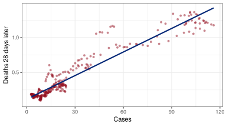3 Evaluation
Different error metrics have pros and cons
Four commonly used error metrics are:
mean squared error (MSE)
mean absolute error (MAE)
mean absolute percentage error (MAPE)
mean absolute scaled error (MASE)
Estimating the prediction error
Given an error metric, we want to estimate the prediction error under that metric.
This can be accomplished in different ways, using the
Training error
Split-sample error
Time series cross-validation error (using all past data or a trailing window)
Training error
The easiest but worst approach to estimate the prediction error is to use the training error, i.e. the average error on the training set that was used to fit the model.
The training error is
generally too optimistic as an estimate of prediction error
more optimistic the more complex the model!1
Training error
Linear regression of COVID deaths on lagged cases
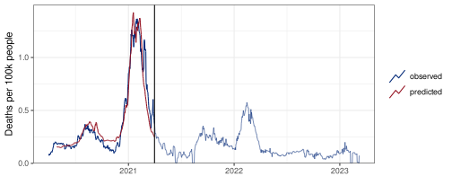 MAE MASE
training 0.0740177 380.9996Split-sample error
To compute the split-sample error
Split data into training (up to time \(t_0\)), and test set (after \(t_0\))
Fit the model to the training data only
Make predictions for the test set
Compute the selected error metric on the test set only
Note
Split-sample estimates of prediction error don’t mimic a situation where we would refit the model in the future. They are pessimistic if the relation between outcome and predictors changes over time.
Split-sample error
Linear regression of COVID deaths on lagged cases
MAE MASE
training 0.0740177 380.9996
split-sample 0.3116854 2914.4575Warning!
Predictions are overshooting the target, especially in early 2022 (Omicron phase).
This is because we are predicting deaths using lagged cases, but the relation between the two changes over time.
Time series cross-validation (CV)
\(h\)-step ahead predictions
If we refit in the future once new data are available, a more appropriate way to estimate the prediction error is time series cross-validation.
To get \(h\)-step ahead predictions, for each time \(t = t_0, t_0+1, \dots\),
Fit the model using data up to time \(t\)
Make a prediction for \(t+h\)
Record the prediction error
The cross-validation MSE is then
\[CVMSE = \frac{1}{n-h-t_0} \sum_{t = t_0}^{n-h} (\hat y_{t+h|t} - y_{t+h})^2\]
where \(\hat y_{t+h|t}\) indicates a prediction for \(y\) at time \(t+h\) that was made with data available up to time \(t\).
Time series cross-validation (CV)
Linear regression of COVID deaths on lagged cases
n <- nrow(ca) #length of time series
h <- k #number of days ahead for which prediction is wanted
pred_all_past <- rep(NA, length = n) #initialize vector of predictions
for (t in t0:(n-h)) {
# fit to all past data and make h-step ahead prediction
reg_all_past = lm(deaths ~ lagged_cases, data = ca, subset = (1:n) <= t)
pred_all_past[t+h] = predict(reg_all_past, newdata = data.frame(ca[t+h, ]))
}Note
With the current model, we can only predict \(k\) days ahead (where \(k\) = number of days by which predictor is lagged)!
Time series cross-validation (CV)
Linear regression of COVID deaths on lagged cases
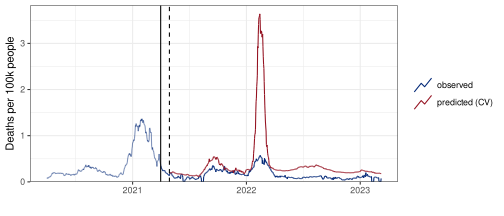 MAE MASE
training 0.0740177 380.9996
split-sample 0.3116854 2914.4575
time series CV 0.2374931 2212.5992Warning!
Predictions are still overshooting the target, but error is smaller than split-sample.
Why?
👍 Forecaster is partially learning the change in cases-deaths relation (especially in late 2022)
👎 We refit on all past data, so predictions are still influenced by old cases-deaths relation
Idea 💡
Ignore old data when refitting?
Regression on a trailing window
Fit the model on a window of data of length \(w\), starting at \(t-w\) and ending at \(t\).
Advantage: if the predictors-outcome relation changes over time, training the forecaster on a window of recent data can better capture the recent relation which might be more relevant to predict the outcome in the near future.
Window length \(w\) considerations:
if \(w\) is too big, the model can’t adapt to the recent predictors-outcome relation
if \(w\) is too small, the fitted model may be too volatile (trained on too little data)
Trailing window
Linear regression of COVID deaths on lagged cases
# Getting the predictions through CV with trailing window
w <- 120 #trailing window size
h <- k #number of days ahead for which prediction is wanted
pred_trailing <- rep(NA, length = n) #initialize vector of predictions
for (t in t0:(n-h)) {
# fit to a trailing window of size w and make h-step ahead prediction
reg_trailing = lm(deaths ~ lagged_cases, data = ca,
subset = (1:n) <= t & (1:n) > (t-w))
pred_trailing[t+h] = predict(reg_trailing, newdata = data.frame(ca[t+h, ]))
}Time series CV: all past vs trailing window
Linear regression of COVID deaths on lagged cases
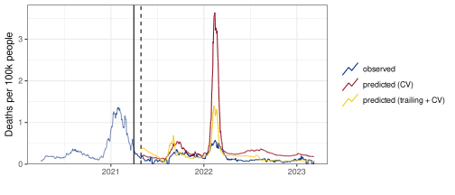 MAE MASE
training 0.07401770 380.9996
split-sample 0.31168536 2914.4575
time series CV 0.23749306 2212.5992
time series CV + trailing 0.09932651 925.37344 ARX models
Autoregressive exogenous input (ARX) model
Idea: predicting the outcome via a linear combination of its lags and a set of exogenous (i.e. external) input variables
Example:
\[\hat y_{t+h} = \hat\phi + \sum_{i=0}^p \hat\phi_i y_{t-i} + \sum_{j=0}^q \hat\beta_j x_{t-j}\]
- Notice: we don’t need to include all contiguous lags, and we could fit e.g.
\[\hat y_{t+h} = \hat \phi + \hat\phi_0 y_{t} + \hat\phi_1 y_{t-7} + \hat\phi_2 y_{t-14} + \hat\beta_0 x_{t} + \hat\beta_1 x_{t-7} + \hat\beta_2 x_{t-14}\]
ARX model for COVID deaths
- Let’s add lagged deaths as a predictor to our previous forecaster:
\[\hat y_{t+28} = \hat\phi + \hat\phi_0 y_{t} + \hat\beta_0 x_{t}\]
- We will refer to this model as ARX(1), as it only includes one lag for each predictor.
- How does it compare to the previous model in terms of time series CV?
Note
From now on, we will only consider regression on a trailing window, since regression on all past data leads to overshooting during Omicron.
Time series CV (trailing): ARX(1) vs lm on lagged cases
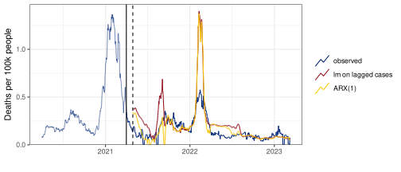 MAE MASE
ARX(1) 0.07852942 731.6178
lm on lagged cases 0.09932651 925.3734Warning!
Regression on a trailing window can be quite sensitive to data issues.

Warning!
- At the forecast date when the downward dip in deaths is predicted, the coefficients estimated by ARX(1) are
(Intercept) lagged_deaths lagged_cases
0.067259206 0.304075294 -0.004285251 The downward dip is explained by the negative coefficient on
lagged_cases, and by the fact that at the forecast dateobserved deaths are exactly equal to 0 (data issue)
observed cases are increasing
Predictions for different \(h\)
So far we only focused on COVID death predictions 28 days ahead.
We will now compare the model with lagged cases as predictor
\[\hat y_{t+h} = \hat\beta + \hat\beta_0 x_t\]
to the ARX(1) model
\[\hat y_{t+h} = \hat\phi + \hat\phi_0 y_t + \hat\beta_0 x_t\]
for horizons \(h = 7, 14, 21, 28\).
- We will only make forecasts on the \(1^{st}\) day of each month, and use a trailing window with \(w = 120\).
Predictions for different \(h\)
h_vals <- c(7, 14, 21, 28) #horizons
pred_m1 = pred_m2 <- data.frame(matrix(NA, nrow = 0, ncol = 3)) #initialize df for predictions
colnames(pred_m1) = colnames(pred_m2) = c("forecast_date", "target_date", "prediction")
w <- 120 #trailing window size
ca_lags <- ca |> select(!c(lagged_cases, lagged_deaths))
# Create lagged predictors
for (i in seq_along(h_vals)) {
ca_lags[[paste0("lagged_deaths_", h_vals[i])]] <- dplyr::lag(ca_lags$deaths, n = h_vals[i])
ca_lags[[paste0("lagged_cases_", h_vals[i])]] <- dplyr::lag(ca_lags$cases, n = h_vals[i])
}
# Only forecast on 1st day of the months
forecast_time <- which(ca_lags$time_value >= t0_date &
ca_lags$time_value < ca_lags$time_value[n-max(h_vals)] &
day(ca_lags$time_value) == 1)
for (t in forecast_time) {
for (i in seq_along(h_vals)) {
h = h_vals[i]
# formulas including h-lagged variables
m1_formula = as.formula(paste0("deaths ~ lagged_cases_", h))
m2_formula = as.formula(paste0("deaths ~ lagged_cases_", h, " + lagged_deaths_", h))
# fit to trailing window of data
m1_fit = lm(m1_formula, data = ca_lags, subset = (1:n) <= t & (1:n) > (t-w))
m2_fit = lm(m2_formula, data = ca_lags, subset = (1:n) <= t & (1:n) > (t-w))
# make h-step ahead predictions
pred_m1 = rbind(pred_m1,
data.frame(forecast_date = ca_lags$time_value[t],
target_date = ca_lags$time_value[t+h],
prediction = predict(m1_fit, newdata = data.frame(ca_lags[t+h, ]))))
pred_m2 = rbind(pred_m2,
data.frame(forecast_date = ca_lags$time_value[t],
target_date = ca_lags$time_value[t+h],
prediction = predict(m2_fit, newdata = data.frame(ca_lags[t+h, ]))))
}
}Predictions for different \(h\), lm on lagged cases
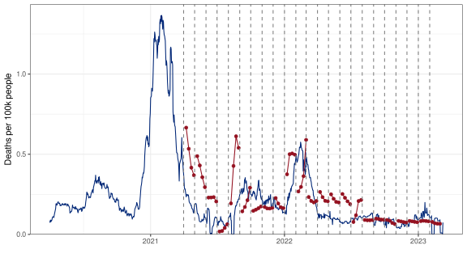 MAE MASE
lm on lagged cases 0.1049742 304.007Predictions for different \(h\), ARX(1)
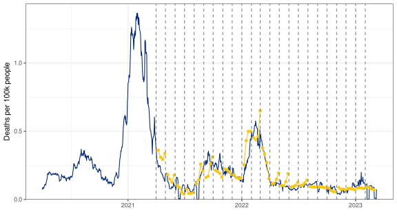 MAE MASE
ARX(1) 0.04463132 129.2531Visualizing predictions for multiple horizons
Different ways to visualize predictions for multiple \(h\)
Last slides: group by forecast date, and show prediction “trajectories”
Other approach: one line and color per horizon \(h\)
Predictions by horizon, ARX(1)
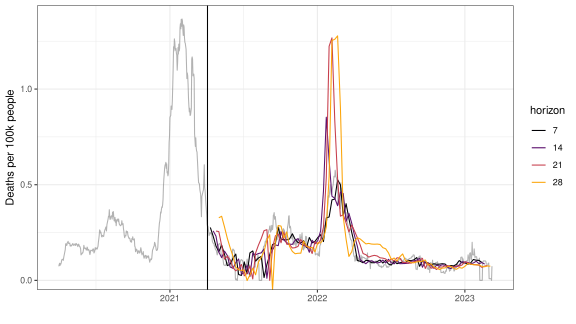5 Overfitting
ARX models with 2 and 3 lags
The ARX(1) model \(\hat y_{t+h} = \hat \phi + \hat\phi_0 y_{t} + \hat\beta_0 x_{t}\) has good predictive performance
We will now try to improve the ARX(1) model by including more lags in the set of predictors
Let’s consider two extensions: the ARX(2) model
\[\hat y_{t+h} = \hat \phi + \hat\phi_0 y_{t} + \hat\phi_1 y_{t-7} + \hat\beta_0 x_{t} + \hat\beta_1 x_{t-7}\]
and the ARX(3) model
\[\hat y_{t+h} = \hat \phi + \hat\phi_0 y_{t} + \hat\phi_1 y_{t-7} + \hat\phi_2 y_{t-14} + \hat\beta_0 x_{t} + \hat\beta_1 x_{t-7} + \hat\beta_2 x_{t-14}\]
and fit them using a trailing window with \(w = 120\).
Time series CV (trailing): ARX(1), ARX(2), and ARX(3)
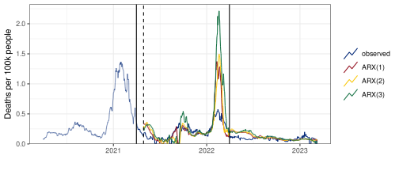 MAE MASE
ARX(1) 0.07852942 731.6178
ARX(2) 0.08716160 812.0393
ARX(3) 0.12487694 1163.4135Warning!
As we add more predictors, forecasts seem more volatile and errors increase.
Overfitting
When we introduce too many predictors in the model
The estimated coefficients will be chosen to mimic the observed data very closely on the training set, leading to small training error
The predictive performance on the test set might be very poor, producing large split-sample and CV error
Extreme case: ARX model with 120 predictors
What happens if we increase the number of predictors to 120?
Let’s fit
\[\hat y_{t+28} = \hat\phi + \hat\phi_0 y_{t} + \hat\phi_1 y_{t-1} + \dots + \hat\phi_{59} y_{t-59} + \hat\beta_0 x_{t} + \dots + \hat\beta_{t-59} x_{t-59}\]
and compare training vs split-sample errors
Extreme case: predictions on training and test set
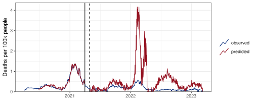 MAE MASE
split-sample 0.3978198 3706.28Note
Some predictions were negative, which doesn’t make sense for count data, so we truncated them at 0.
6 Prediction Intervals
Point predictions vs intervals
- So far, we have only considered point predictions, i.e. we have fitted models to provide our best guess on the outcome at time \(t+h\).
Important
What if we want to provide a measure of uncertainty around the point prediction or a likely range of values for the outcome at time \(t+h\)?
- For each target time \(t+h\), we can construct prediction intervals, i.e. provide ranges of values that are expected to cover the true outcome value a fixed fraction of times.
Prediction intervals for lm fits
To get prediction intervals for the models we previously fitted, we only need to tweak our call to
predictby adding as an input:interval = "prediction", level = pwhere \(p \in (0, 1)\) is the desired coverage.
The output from
predictwill then be a matrix withfirst column a point estimate
second column the lower limit of the interval
third column the upper limit of the interval
Prediction intervals for ARX (CV, trailing window)
# Initialize matrices to store predictions
# 3 columns: point estimate, lower limit, and upper limit
pred_interval_lm <- matrix(NA, nrow = n, ncol = 3)
colnames(pred_interval_lm) <- c('prediction', 'lower', 'upper')
for (t in t0:(n-h)) {
# Fit ARX and predict
arx_trailing = lm(deaths ~ lagged_deaths + lagged_cases, data = ca,
subset = (1:n) <= t & (1:n) > (t-w))
pred_interval_lm[t+h, ] = pmax(0,
predict(arx_trailing, newdata = data.frame(ca[t+h, ]),
interval = "prediction", level = 0.8))
}Prediction intervals for ARX (CV, trailing window)

MAE MASE
lm.trailing 0.08932857 832.2278Expected vs actual coverage
We would expect the ARX model to cover the truth about 80% of the times. Is this actually true in practice?
The actual coverage of the predictive intervals is lower:
Actual Expected
Coverage 0.6 0.8- We can use calibration to handle under-covering (more on this in the afternoon)
7 Forecasting with Versioned Data
Versioned data
So far: data never revised (or simply ignored revisions, as_of today)
Important
How can we train forecasters when dealing with versioned data?
→ An `epi_archive` object, with metadata:
ℹ Min/max time values: 2020-04-01 / 2023-03-09
ℹ First/last version with update: 2020-04-02 / 2023-03-10
ℹ Versions end: 2023-03-10
ℹ A preview of the table (24953 rows x 5 columns):
Key: <geo_value, time_value, version>
geo_value time_value version case_rate death_rate
<char> <Date> <Date> <num> <num>
1: ca 2020-04-01 2020-04-02 3.009195 0.06580240
2: ca 2020-04-01 2020-05-07 3.009195 0.06327156
3: ca 2020-04-01 2020-06-21 3.009195 0.06580242
4: ca 2020-04-01 2020-07-02 2.978825 0.06580242
5: ca 2020-04-01 2020-07-03 2.978825 0.06580242
---
24949: ca 2023-03-07 2023-03-08 0.000000 0.00000000
24950: ca 2023-03-07 2023-03-10 27.397832 0.00000000
24951: ca 2023-03-08 2023-03-09 21.083071 0.00000000
24952: ca 2023-03-08 2023-03-10 0.000000 0.00000000
24953: ca 2023-03-09 2023-03-10 22.185487 0.52072650Version-aware forecasting
Important: when fitting and predicting, only use data in the latest version available at the forecast date!
Version-aware forecasting
# initialize dataframe for predictions
# 5 columns: forecast date, target date, 10%, 50%, and 90% quantiles
pred_aware <- data.frame(matrix(NA, ncol = 5, nrow = 0))
w <- 120 #trailing window size
h <- 28 #number of days ahead
# forecast once a week
fc_time_values <- seq(from = t0_date, to = as.Date("2023-02-09"), by = "1 week")
for (fc_date in fc_time_values) {
# get data version as_of forecast date
data <- epix_as_of(ca_archive, version = as.Date(fc_date))
# create lagged predictors
data$lagged_deaths <- dplyr::lag(data$deaths, h)
data$lagged_cases <- dplyr::lag(data$cases, h)
# perform regression
lm_weekly <- lm(deaths ~ lagged_deaths + lagged_cases,
# only consider window of data
data = data |> filter(time_value > (max(time_value) - w)))
# construct data.frame with the right predictors for the target date
predictors <- data.frame(lagged_deaths = tail(data$deaths, 1),
lagged_cases = tail(data$cases, 1))
# make predictions for target date and add them to dataframe of predictions
pred_aware <- rbind(pred_aware,
data.frame('forecast_date' = max(data$time_value),
'target_date' = max(data$time_value) + h,
t(pmax(0, predict(lm_weekly, newdata = predictors,
interval = "prediction", level = 0.8)))))
}Version-aware predictions (CV, trailing)
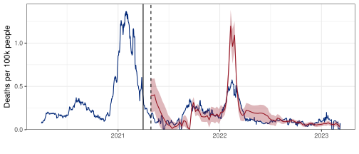 MAE MASE
version-aware 0.08001814 224.2782Version-unaware predictions (CV, trailing)
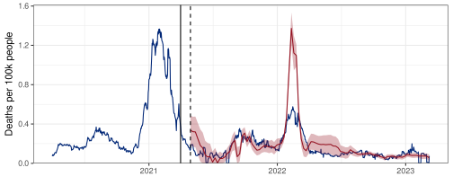 MAE MASE
version-unaware 0.07934554 200.4657
Time Series — cmu-delphi/micom-tooling-workshop-2025